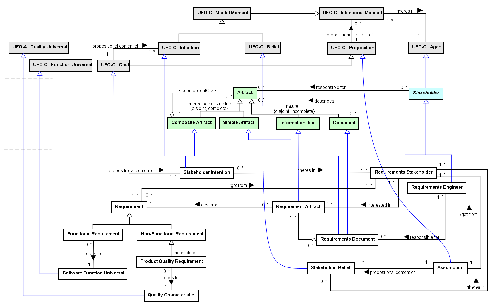

SEON: Networked Ontology Specification
Reference Software Requirements Ontology (RSRO)
1. Ontology Description
The Reference Software Requirements Ontology (RSRO) aims at being a reference for software requirements notions. RSRO is centered in the conception of requirement as a goal to be achieved, and addresses the distinction between functional and non-functional requirements, how requirements are documented in proper artifacts, among others. Since RSRO provides the technical concepts for requirements, it is reused in other SEON networked ontologies.
2. Related Ontologies
Networked ontologies used by RSRO:
3. Ontology Models
Figure 1 presents the conceptual model of the RSRO.

Figure 1. RSRO conceptual model.
The main RSRO concept is Requirement. It is a goal, representing the users' needs and expectations (Stakeholder Intention) to be achieved as result of the system development. Requirements can be functional or non-functional. Functional Requirements are the ones defining a function to be available from the target system (e.g. the need for providing a client register or controlling an order). They refer to Software Function Types, i.e. types of functions that the software must provide (e.g., providing a client register, controlling an order). Non-Functional Requirements define criteria or capabilities for the system (e.g. being easy to operate, being in conformance with a standard). A special type of NFR is Product Quality Requirement, which refers to Quality Characteristics that the product shall present in some degree, such as reliability, usability, efficiency.
Requirements are documented by Requirement Artifacts, an Information Item that describes the Requirement in a proper way. The Requirements Document is composed of Requirement Artifacts and related information (such as models, information sources and varied descriptions). This Document is under the responsibility of the Requirements Engineer, a Stakeholder that conducts the requirements development activities. The Requirements Stakeholder represents the Stakeholders from whom the Requirements are collected and, consequently, are the ones interested in the Requirement Artifacts.
4. Concepts Definition
The following table shows the definitions for RSRO concepts.
| Concept |
Definition |
Assumption
 |
Assumptions describe states-of-a�affairs in the environment of interest that the Stakeholders believe to be true, i.e., they are the propositional content of Stakeholders' Beliefs. They express the belief that a specific situation exists in the environment.
|
| Functional Requirement
|
Requirement defining a function to be available in the product being built.
Ex.: The need for the system to control client orders. |
| Non-Functional Requirement
|
Requirement defining criteria or capabilities for the product.
Ex.: Being accessible from some specific browsers, Being in conformance with a standard, Performing a function in an established time. |
| Product Quality Requirement
|
Non-Functional Requirement referring to a Quality Characteristic of the software product.
Ex.: Being accessible from some specific browsers, Performing a function in an established time. |
| Quality Characteristic
|
Quality Universal denoting the types of quality characteristics expected in a software.
Ex.: reliability, usability, efficiency, maintainability, portability. |
| Requirement
|
Goal to be achieved, representing a condition or capacity needed for the system users for solving a problem.
Ex.: Providing a product register; Performing a function in an established time. |
| Requirement Artifact
|
Information Item describing a Requirement.
Ex.: "The system shall provide a product register.", "The system shall control the client orders.", "The system shall be operable from Google Chrome version 32+." |
| Requirements Document
|
Document composed of Documented Requirements and related information, as a basis for other technical software processes, including maintenance.
Ex.: the Requirements Document of the Alfa Project. |
| Requirements Engineer
|
Stakeholder responsible for conducting the requirements development activities.
Ex.: an organization employee assigned as Requirements Engineer in the requirements development activities. |
| Requirements Stakeholder
|
Stakeholder that provides needs and expectations for the product.
Ex.: users, operators, customers, suppliers. |
| Software Function Universal
|
Function Universal denoting the types of functions expected in a software.
Ex.: Controlling client orders. |
| Stakeholder Belief
|
The belief of Requirements Stakeholders regarding the environment of interest that are described in terms of Assumptions.
|
| Stakeholder Intention
|
The intention of Requirements Stakeholders that defines requirements to be achieved.
|
Detailed Concepts
RSRO::Assumption
Specializes UFO::Proposition
Assumptions describe states-of-a�affairs in the environment of interest that the Stakeholders believe to be true, i.e., they are the propositional content of Stakeholders' Beliefs. They express the belief that a specific situation exists in the environment.
Relations:
Assumption (1..1) propostional content of (1..*) Stakeholder Belief
Assumption (1..1) /got from (1..*) Requirements Stakeholder
<<mode>>
Functional Requirement |
RSRO::Functional Requirement
Specializes RSRO::Requirement
Requirement defining a function to be available in the product being built.
Ex.: The need for the system to control client orders.
Relations:
Functional Requirement (0..*) refers to (1..1) Software Function Universal
<<mode>>
Non-Functional Requirement |
RSRO::Non-Functional Requirement
Specializes RSRO::Requirement
Requirement defining criteria or capabilities for the product.
Ex.: Being accessible from some specific browsers, Being in conformance with a standard, Performing a function in an established time.
<<mode>>
Product Quality Requirement |
RSRO::Product Quality Requirement
Specializes RSRO::Non-Functional Requirement
Non-Functional Requirement referring to a Quality Characteristic of the software product.
Ex.: Being accessible from some specific browsers, Performing a function in an established time.
Relations:
Product Quality Requirement (0..*) refers to (1..1) Quality Characteristic
<<2ndOT>>
Quality Characteristic |
RSRO::Quality Characteristic
Specializes UFO::Quality Universal
Quality Universal denoting the types of quality characteristics expected in a software.
Ex.: reliability, usability, efficiency, maintainability, portability.
Relations:
Product Quality Requirement (0..*) refers to (1..1) Quality Characteristic
RSRO::Requirement
Specializes UFO::Goal
Goal to be achieved, representing a condition or capacity needed for the system users for solving a problem.
Ex.: Providing a product register; Performing a function in an established time.
Relations:
Requirement (0..*) /got from (1..*) Requirements Stakeholder
Requirement (1..*) propositional content of (1..*) Stakeholder Intention
Requirement Artifact (0..*) describes (1..1) Requirement
<<subkind>>
Requirement Artifact |
RSRO::Requirement Artifact
Specializes SPO::Information Item, SPO::Simple Artifact
Information Item describing a Requirement.
Ex.: "The system shall provide a product register.", "The system shall control the client orders.", "The system shall be operable from Google Chrome version 32+."
Relations:
Requirement Artifact (0..*) describes (1..1) Requirement
Program (0..*) \intends to satisfy (1..*) Requirement Artifact
Requirements Documentation uses Requirement Artifact
Requirements Negotiation and Prioritization changes Requirement Artifact
Conceptual Modeling uses Requirement Artifact
Requirements Elicitation creates Requirement Artifact
Program Specification (0..*) intends to satisfy (1..*) Requirement Artifact
Requirements Document (0..1) <>-- (1..*) Requirement Artifact
Requirements Stakeholder (1..*) interested in (1..*) Requirement Artifact <<material>>
<<subkind>>
Requirements Document |
RSRO::Requirements Document
Specializes SPO::Document, SPO::Composite Artifact
Document composed of Documented Requirements and related information, as a basis for other technical software processes, including maintenance.
Ex.: the Requirements Document of the Alfa Project.
Relations:
Requirements Document (0..1) <>-- (1..*) Requirement Artifact
Requirements Document describes Conceptual Model
Requirements Engineer (1..*) responsible for (0..*) Requirements Document
Coding uses Requirements Document
Requirements Documentation creates Requirements Document
Design Evaluation uses Requirements Document
Requirements Negotiation and Prioritization changes Requirements Document
Code Review uses Requirements Document
Requirements Verification and Validation uses Requirements Document
Detailed Design uses Requirements Document
Architectural Design uses Requirements Document
<<role>>
Requirements Engineer |
RSRO::Requirements Engineer
Specializes SPO::Stakeholder
Stakeholder responsible for conducting the requirements development activities.
Ex.: an organization employee assigned as Requirements Engineer in the requirements development activities.
Relations:
Requirements Engineer is in charge of Requirements Elicitation
Requirements Engineer is in charge of Conceptual Modeling
Requirements Engineer participates in Requirements Verification and Validation
Requirements Engineer is in charge of Requirements Negotiation and Prioritization
Requirements Engineer (1..*) responsible for (0..*) Requirements Document
Requirements Engineer is in charge of Requirements Documentation
<<role>>
Requirements Stakeholder |
RSRO::Requirements Stakeholder
Specializes SPO::Stakeholder
Stakeholder that provides needs and expectations for the product.
Ex.: users, operators, customers, suppliers.
Relations:
Requirements Stakeholder participates in Requirements Elicitation
Requirements Stakeholder participates in Requirements Negotiation and Prioritization
Requirements Stakeholder participates in Requirements Verification and Validation
Requirements Stakeholder (1..*) interested in (1..*) Requirement Artifact <<material>>
Stakeholder Intention (0..*) inheres in (1..*) Requirements Stakeholder
Requirement (0..*) /got from (1..*) Requirements Stakeholder
Stakeholder Belief (0..*) inheres in (1..*) Requirements Stakeholder
Assumption (1..1) /got from (1..*) Requirements Stakeholder
<<2ndOT>>
Software Function Universal |
RSRO::Software Function Universal
Specializes UFO::Function Universal
Function Universal denoting the types of functions expected in a software.
Ex.: Controlling client orders.
Relations:
Program (0..*) implements (1..*) Software Function Universal
Functional Requirement (0..*) refers to (1..1) Software Function Universal
Program Specification (0..*) describes (1..*) Software Function Universal
Software Function (0..*) instance of (1..*) Software Function Universal
RSRO::Stakeholder Belief
Specializes UFO::Belief
The belief of Requirements Stakeholders regarding the environment of interest that are described in terms of Assumptions.
Relations:
Stakeholder Belief (0..*) inheres in (1..*) Requirements Stakeholder
Assumption (1..1) propostional content of (1..*) Stakeholder Belief
RSRO::Stakeholder Intention
Specializes UFO::Intention
The intention of Requirements Stakeholders that defines requirements to be achieved.
Relations:
Stakeholder Intention (0..*) inheres in (1..*) Requirements Stakeholder
Requirement (1..*) propositional content of (1..*) Stakeholder Intention
Reference Software Requirements Ontology (RSRO)
Sun Sep 24 18:30:41 BRT 2017